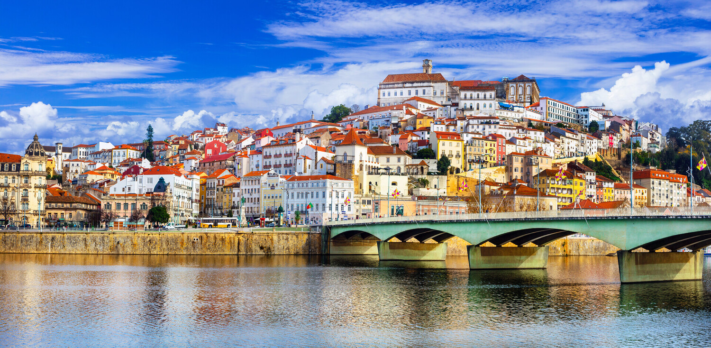

Coimbra
| Coimbra é uma cidade ribeirinha situada no centro de Portugal que, em tempos, foi a capital do país. Possui um centro histórico medieval bem preservado, onde se encontra a histórica Universidade de Coimbra. Este conjunto, construído no local de um antigo castelo, é conhecido pela Biblioteca Joanina, de estilo barroco, e pela sua torre sineira do século XVIII. No centro histórico ergue-se ainda a Sé Velha, uma catedral românica do século XII. |
 |